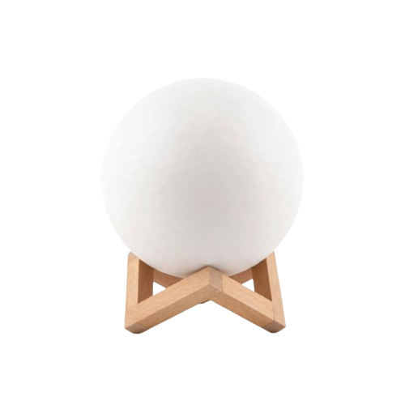
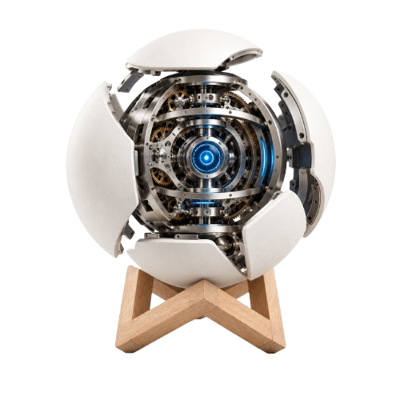

Protótipo Luna
LUNA


Representação provisória · não corresponde ao hardware definitivodo projeto
01 / Visão geral
Explore o
projeto.
Mais do que ensinar educação financeira, a Luna foi pensada para transformar necessidades financeiras individuais em soluções práticas e personalizadas. A proposta ainda está em desenvolvimento.
02 / Experiências
Pequenas ideias,
prontas para testar.
Experimentos que funcionam no navegador e deixam claro o que é demonstração.
01 / LUNA Ilustração provisória
03 / Próximos passos
Um projeto
em construção.
A interação por voz, o aplicativo e os resultados ainda precisam ser pesquisados e validados pela equipe. Esta versão organiza o espaço para documentar o percurso da Luna sem presumir funcionalidades.
04 / Mapa do projeto
Uma visita rápida
por cada espaço.
Um resumo para escolher por onde continuar. As demonstrações são locais e ilustrativas; detalhes do protótipo físico serão incluídos quando forem confirmados.
Da proposta
ao próximo passo.
Um espaço para registrar objetivo, motivação, funcionamento, tecnologias e limitações conforme a equipe validar cada informação.
- Objetivo e contexto
- Tecnologias e limites
- Etapas de integração
Gire. Aproxime.
Observe a forma.
Canvas interativo com geometria provisória, controles de zoom e câmera. Não representa peças reais nem o modelo físico definitivo.
Abrir visualizadorUm painel para
experimentar a interface.
Controles, estado, histórico e leituras fictícias para demonstrar uma possível experiência — sem conexão ou comando de hardware.
Ver painel localCinco pessoas.
Um projeto em equipe.
Os cinco espaços de apresentação estão prontos para receber nomes, fotos, funções e contribuições confirmados pelos integrantes.
Ver os creatorsUma pausa
para jogar.
Jogo da velha para duas pessoas no mesmo dispositivo, com reinício de partida. Uma experiência independente da Luna.
Começar uma partidaO caminho também
faz parte do projeto.
Uma seleção de problemas e pautas para pesquisar, com fontes para aprofundar o tema da plataforma.
Acompanhar atualizaçõesPesquisa com
fontes verificáveis.
Área para organizar autoria, publicação, link, data de acesso e contribuição de cada fonte usada pela equipe.
Consultar referênciasUma conversa começa
por aqui.
Formulário demonstrativo que valida os campos no navegador. Ele ainda não envia nem armazena mensagens.
Abrir formulárioO que esta versão
faz e não faz.
Resumo transparente sobre dados, armazenamento local e serviços externos. O conteúdo deve ser revisto se o site passar a coletar dados.
Ler sobre privacidadeVisualizações e controles são demonstrativos; nenhum deles se conecta ao protótipo físico.